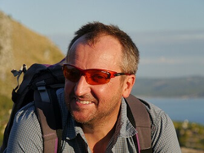

Dr Bartosz Korabiewski

Kontakt:
nr pokoju: 187
nr telefonu: 071 375-9-561
e-mail: bartosz.korabiewski@uwr.edu.pl
konsultacje: brak (dydaktyka wyłącznie w semestrze zimowym)
Zainteresowania naukowe:
- Geochemia gleb, zanieczyszczenia metalami ciężkimi
- Antropopresja w środowisku
- Gleboznawstwo, gleby obszarów polarnych i wysokogórskich
- Geomorfologia fluwialna
- Techniki GIS w badaniach środowiskowych
Wykształcenie:
- 1987-1992: Studia magisterskie w Instytucie Geograficznym UWr
- 1992: Dyplom magistra geografii, specjalność Geomorfologia, tytuł pracy: Morfologia doliny Wisłoki w okolicy Pilzna. Opiekun: prof. dr hab. Alfreda Jahna
- 2002: Obrona pracy doktorskiej pod kier. prof. dr hab. Adolfa Szponara, Morfogeneza doliny górnej i środkowej Kwisy w okresie neoholoceniu w świetle badań metalostratygraficznych i gleboznawczych
Dydaktyka:
- Gleboznawstwo
- Gospodarka Zasobami Glebowymi
- Fizjografia Planistyczna
- Antropopresja w środowisku
- Człowiek w środowisku
- Ochrona litosfery i pedosfery
- Ochrona przyrody
- Ocena stanu środowiska gruntowo-wodnego
- Gospodarka odpadami
- Fizjografia urbanistyczna
- Rekultywacja terenów przemysłowych
- Analiza środowiska przyrodniczego
- Metodyka oznaczania zanieczyszczeń środowiska
- Środowisko pustynne
- Geochemia środowiska
Doświadczenia naukowe zdobyte za granicą:
- 2018: 6.07-9.08. Udział w wyprawie naukowej UW w Pamir (Tadżykistan, Kirgizja) w ramach projektu „Wpływ biologicznych skorup glebowych na rozwój gleb w warunkach klimatu półsuchego: ocena sekwestracji C i N w ekosystemach wysokogórskich.”
- 2015: 15.07-3.08. Udział w wyprawie naukowej UW w Pamir (Tadżykistan) w ramach projektu „Mokradła Pamiru Wschodniego: występowanie, charakterystyka przyrodnicza i stan zachowania.”
- 2011:
- Udział w wyprawie naukowej (projekt badawczy 4445/PB/IGRR/11) na Spitsbergen
- 27.03-1.04. Wizyta studyjna w Instytucie Geograficznym na Ruhr Universitat Bochum (Niemcy). prof. B. Marschner
- 2010: 7.07 – 31.07. Udział w wyprawie naukowej Instytutu Geografii i Rozwoju Regionalnego UWr w Ałtaj (Kazachstan)
- 2009: 4.07 – 10.08. Udział w Wyprawie Polarnej Instytutu Geograficznego na Spitsbergen
- 2007: 30.07 – 24.08. Udział w wyprawie naukowej w ramach wymiany z Uniwersytetem w Aktau (Kazachstan)
- 2006:11.07 – 16.08. Udział w Wyprawie Polarnej Instytutu Geograficznego na Spitsbergen
- 2005: 20.09 – 5.10. Staż naukowy w Instytucie Geograficznym na Ruhr Universitat Bochum (Niemcy)
- 2004: 11.07 – 16.08. Udział w Wyprawie Polarnej Instytutu Geograficznego na Spitsbergen
- 2000: 14 – 18.01. Ukończony kurs „Geo Information and Communication Technology” – Szymbark, PTG Warszawa i Uniwersytet Techniczny (TU) w Delft (Holandia). Wykł. Prof. Ir. Henri J.G.L. Alders
- 1998:
- 1.05 – 31.05. Staż naukowy w Instytucie Geograficznym na Ruhr Universitat Bochum (Niemcy). Konsultacje naukowe nt. wykorzystania wyników analiz zawartości metali ciężkich w osadach do datowania wieku względnego osadu.
- 23.02-9.03. Udział w kursie z zakresu zastosowania technik GIS w geografii przy użyciu programu GRASS – w ENRIS na Królewskim Uniwersytecie Technicznym (KTH) w Sztokholmie (Szwecja)
- 1995: 16.09-16.10. Staż naukowy w Petersburskim Uniwersytecie Państwowym w St. Petersburgu (Rosja)
Nagrody i wyróżnienia:
Udział w projektach badawczych:
- Grant NCN, nr projektu 2013/09/B/ST10/01662), 2014-2017: Mokradła Pamiru Wschodniego: występowanie, charakterystyka przyrodnicza i stan zachowania. Charakter udziału – wykonawca
- Grant NCN, nr projektu 2017/25/B/ST10/00468, 2018-2021, Wpływ biologicznych skorup glebowych na rozwój gleb w warunkach klimatu półsuchego: ocena sekwestracji C i N w ekosystemach wysokogórskich. Charakter udziału – wykonawca
- rojekt współfinansowany przez UE w ramach Europejskiego Funduszu Społecznego WND-POKL. 03.03.04-00-042/10 „Projekt EKOLOGIA – innowacyjny, interdyscyplinarny program nauczania przedmiotów matematyczno-przyrodniczych metodą projektu”. Charakter udziału – wykonawca
Wybrane publikacje:
- 2018: Skurzyński J., Jary Z., Raczyk
J., Moska P.,
Korabiewski B.,
Ryzner K., Krawczyk M., 2018. Geochemical characterization of the Late Pleistocene
loess-palaeosol sequence in Tyszowce (Sokal Plateau-Ridge, SE Poland).
Quaternary International, w druku.
https://doi.org/10.1016/j.quaint.2018.04.023 - 2015: Raczyk J., Jary Z.,
Korabiewski B., 2015.
Geochemical properties
of the Late Pleistocene loess-soil sequence in Dankowice (Niemcza-Strzelin Hills), Landform
Analysis. - Vol. 29, s. 49-61.
DOI: 10.12657/landfana.029.007 - 2014: Owczarek P., Migała K.,
Korabiewski B.,
2014. Flood-plain
responses to contemporary climate change in small High-Arctic basins (Svalbard, Norway), Boreas.
- Vol. 43, iss. 2, s. 384-402.
http://dx.doi.org/10.1111/bor.12061 - 2013: Kabała C., Korabiewski B., 2013. Środowisko geograficzne otoczenia Stacji Polarnej im. Stanisława Baranowskiego - Lodowiec Werenskiolda. Gleby, [W:] Dawne i współczesne geoekosystemy Spitsbergenu: polskie badania geomorfologiczne Zwoliński Z., Kostrzewski A., Pulina M., (red.), Poznań, Bogucki Wydawnictwo Naukowe, s. 114-118.
- 2012: Jary Z., Kasprzak M., Korabiewski B., Owczarek P., Jancewicz K., Schutty B., 2012. Współczesne procesy morfogenetyczne w górnej części zlewni Buchtarmy (Wysoki Ałtaj, Kazachstan), Landform Analysis. - Vol. 20 (2012), s. 31-49
- 2011:
- Kasza L., Korabiewski B., Leśniewicz S., Tarka R., Tarka Z., 2011. Ziemia: eksperymenty z trzema żywiołami. Korabiewski B., Tarka R. (red.), Wrocław, Uniwersytet Wrocławski. Wydział Nauk o Ziemi i Kształtowania Środowiska, 104 s.
- Kasza L., Korabiewski B., Leśniewicz S., Tarka R., Tarka Z., 2011. Ziemia: przewodnik po projektach edukacyjnych. Korabiewski B., Tarka R., Moskwa K. (red.), Wrocław, Uniwersytet Wrocławski. Wydział Nauk o Ziemi i Kształtowania Środowiska, 128 s.
- Kasza L., Korabiewski B., Leśniewicz S., Tarka R., 2011. Ziemia: zabawy z trzema żywiołami. Korabiewski B., Tarka R., Moskwa K. (red.), Wrocław, Uniwersytet Wrocławski. Wydział Nauk o Ziemi i Kształtowania Środowiska, 56 s.
- 2010:
- Korabiewski B., Kuc M., Lewicki P., Lewicki St., 2010. Gleby [W:] Środowisko Wrocławia, Oficyna Wydawnicza Atut, s. 143-146.
- Korabiewski B., Lewicki P., 2010. Gleby Wrocławia [W:] Środowisko Wrocławia, Oficyna Wydawnicza Atut, s. 22-25.
- 2008: Korabiewski B., 2008. Metale ciężkie w osadach dennych Jeziora Leśniańskiego na rzece Kwisie [W:] Zapis działalności człowieka w środowisku przyrodniczym. T. 3 E. Smolska, P. Szwarczewski (red.), Warszawa, Wydawnictwo Szkoły Wyższej Przymierza Rodzin, s. 71-77
- 2005: Korabiewski B., 2005. Metale ciężkie w osadach dennych Jeziora Leśniańskiego [W:] Jeziora i sztuczne zbiorniki wodne: procesy przyrodnicze oraz znaczenie społeczno-gospodarcze, A.T. Jankowski i M. Rzętała (red.), Sosnowiec, s. 107-113.
- 2004: Alexandrowicz W.P., Gębica P., Korabiewski B., 2004. Osady i malakofauna plejstoceńskiej terasy Wisłoki w Pilźnie koło Dębicy [W:] Prace Komisji Paleogeografii Czwartorzędu Polskiej Akademii Umiejętności, T. 2, Kraków, s. 31-37.
- 2003: Szwarczewski P., Korabiewski B., 2003. Wybrane geochemiczne cechy osadów wypełniających starorzecza w dolinie dolnej Pilicy w okolicach Warki. [W:] Cechy teksturalne osadów stokowych i fluwialnych. E. Smolska, P. Szwarczewski (red.), Warszawa, Prace i Studia Geograficzne, Uniwersytet Warszawski, t. 33. s. 71-81.
- 2002: Korabiewski B., 2002. Wykorzystanie metali ciężkich w określaniu wieku względnego osadu na przykładzie zlewni górnej Kwisy [W:] Zapis z działalności człowieka w środowisku przyrodniczym P. Szwarczewski, E. Smolska (red.)., T. 1 – Warszawa - Łomża, s. 65-69
- 2001: Korabiewski B., 2001. Próba zastosowania metody metalostratygrafii w badaniu aluwiów holoceńskich na Dolnym Śląsku na przykładzie Kwisy w okolicy Mirska. [W:] Geneza, litologia i stratygrafia utworów czwartorzędowych (A. Kostrzewski (red.),. T. 3, Poznań, s. 209-217
- 1994: Korabiewski B., 1994. Morfologia Doliny Wisłoki w okolicy Pilzna. Czasopismo Geograficzne, T. 65, z. 3-4, s. 327-336.